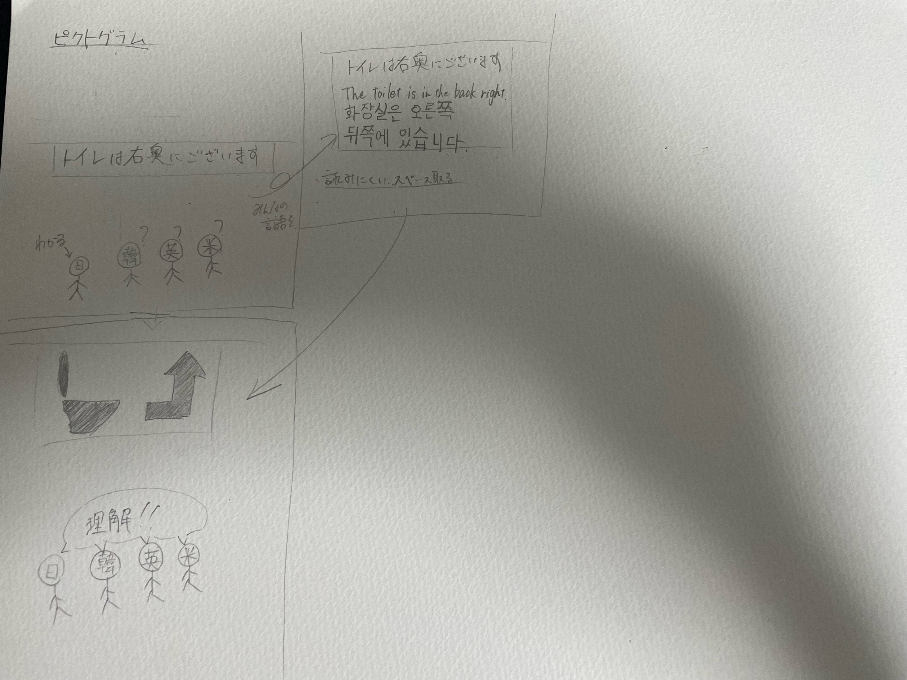

宿題

最近、街を歩いていると海外の人を多く見かけることがある。
そんな時、案内（トイレは一例）が日本語だけだったら海外から来た人は理解できないだろう。
だからと言って色々な言語バージョンを入れると、
その分ごちゃごちゃして読みにくかったり、場合によってはスペースを必要としたりなどの問題が出てきてしまう。
そこで提案したいのが「ピクトグラム」だ。
これにすることで、見やすく、場所も取らず、世界共通認識で永久的に使うことができる。老若男女理解できる。
これを普及し、そしてバリエーションを増やすビジネスがあるといいと思った。